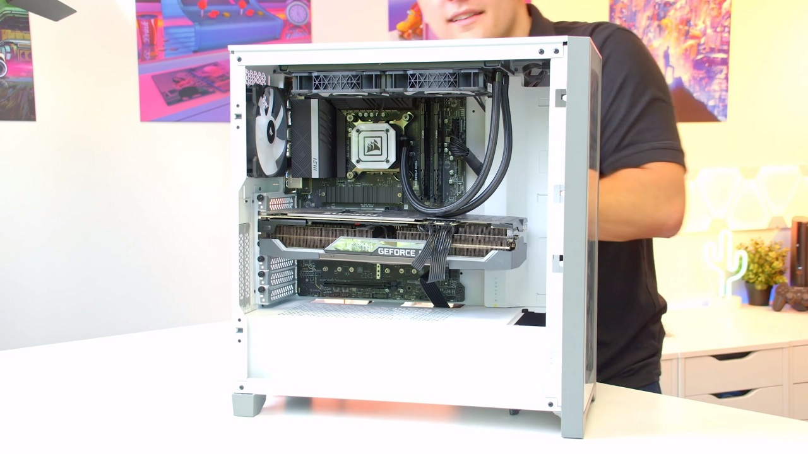
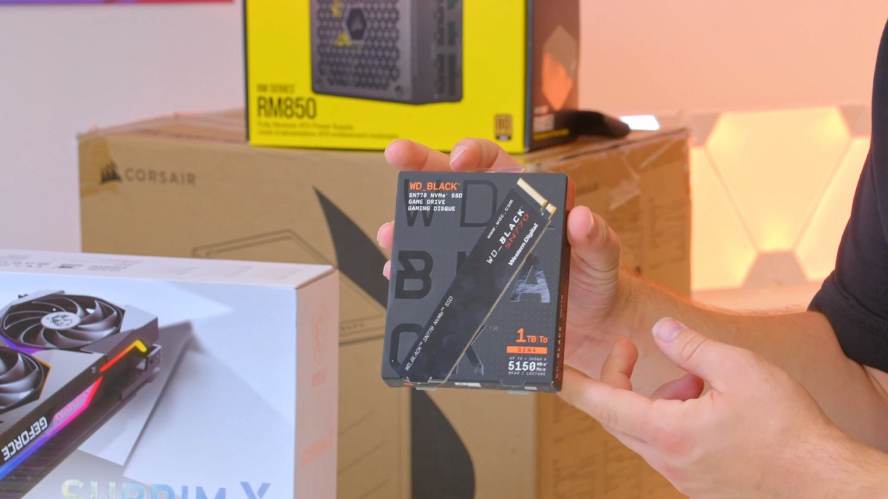

- Choose a suitable build area.
- Manage electrostatic discharge.
- Keep a clear build area.
- Hold onto component boxes.
- DON'T FORCE ANYTHING
Have all the components for your PC build arrived from Ebuyer? No doubt you're raring to go, but hold on. From jump-starting a PC to managing electrostatic discharge, read these top 10 tips for building a PC first.
Choose a suitable build area.
When it's time to build your PC, you'll want to clear out a large area that's easy to build on. Wooden dining tables are prime examples of what you could use in a home environment. They're right around waist height, so you can lower your hardware into your case and plug in all the fiddly connectors without too much trouble.
And, as the table has a large surface, you won't run out of room for a sprawl of opened boxes and loose cables. Ideally, you'll have the computer case at one end of the table, hardware at the other, and your build area in-between. It's too easy to lose that one screw if your build area is too cramped and messy. What's more, wood acts as a great insulator of electricity, reducing the risk of you accidentally zapping your hardware.
Manage electrostatic discharge.

If you can, try to avoid building on carpet. Brushing against carpet is going to build up static. Which, if you're not careful, can discharge into your hardware and potentially do damage. But as long as you aren't going out of your way to shuffle on carpet, electrostatic discharge isn't as big of a deal as it's made out to be.
Modern hardware is pretty well protected from ESD and withstands a fair amount before and real damage is dealt. Nonetheless, ESD is so easily avoided, so why run the risk?
There are some common PC building practices to keep yourself grounded. Plugging a switched-off power supply into an outlet will keep its metal enclosure grounded. So before handling any hardware, simply touch this PSU to discharge any built-up static into it and ground yourself – easy! You can take this a step further with an anti-static wrist strap. It's a fool-proof way to avoid ESD. Wrap this strap around your wrist and attach its metal clip to ground, and it'll keep you grounded.
If you're a first-time PC builder, you'll no doubt be a little nervous about handling and potentially damaging your new hardware. For peace of mind, we'd recommend picking up an ESD strap. Even experienced PC builders use ESD straps as it allows them to focus entirely on the build.
Keep a clear build area

Over the course of a PC build, you go through so much hardware. If you don't keep on top of it all, your build area can turn into a dumping ground of cardboard boxes, manuals, pamphlets, and empty baggies. All this rubbish can get in your way, slowing you down and making the build more frustrating than it has to be.
You'd be surprised by how quickly you can build a PC when everything's neatly laid out at arm's length. So once you've unboxed something, set its packaging aside and keep the build area organised. We recommend building a PC one component at a time. There's no need to have the power supply's cables scattered all over your build area when you're just installing the CPU, for instance.
Hold onto boxes
Notice how we said to set aside the packaging, not throw it away. Even if it's a poor use of space, we recommend storing these boxes away, or at least ones for core components like the CPU, GPU, and motherboard. Hopefully you won't run into any issues with your hardware, but if you do, it's much safer to return it if you've got the original packaging to hand.
Whether it's the motherboard's CPU socket cover or foam padding in a GPU's box, it's all designed to keep the hardware protected. An important point to bear in mind is that some manufacturers won't accept returns unless the hardware's sufficiently packaged, and that's when having the original packaging comes in handy.
Plus, when it comes time to upgrade your PC, it's easier to resell your old hardware if it's boxed up. So chuck all those loose cables, manuals, and boxes into the bottom of a closet, you'll never know when you'll need them.
Don't force anything

Many people compare building a PC to Lego. Like these plastic bricks, many components snap into place, often accompanied by an audible 'click'. While it may require a bit of force to ensure a component is seated correctly, you should never force anything. A component is designed to go in one way and one way only.
If you feel resistance, like something's blocking the way, stop. Ramming a component in won't get you anywhere. Lift it back out, check the component's manual or a build guide, then try again. From scratching the gold contacts on a DIMM of RAM to snapping the pins off a CPU, components can be quite delicate and broken easily if you aren't careful.
If you know where to look for them, there are also handy guidelines built onto the components themselves. For instance, on one corner of a CPU you'll find a small triangle. This corresponds with another triangle on the motherboard's CPU socket. Line these triangles up and you get the correct orientation needed to install the GPU. RAM DIMMs and M.2 drives are notched, so it's pretty easy to tell which way's the right one.